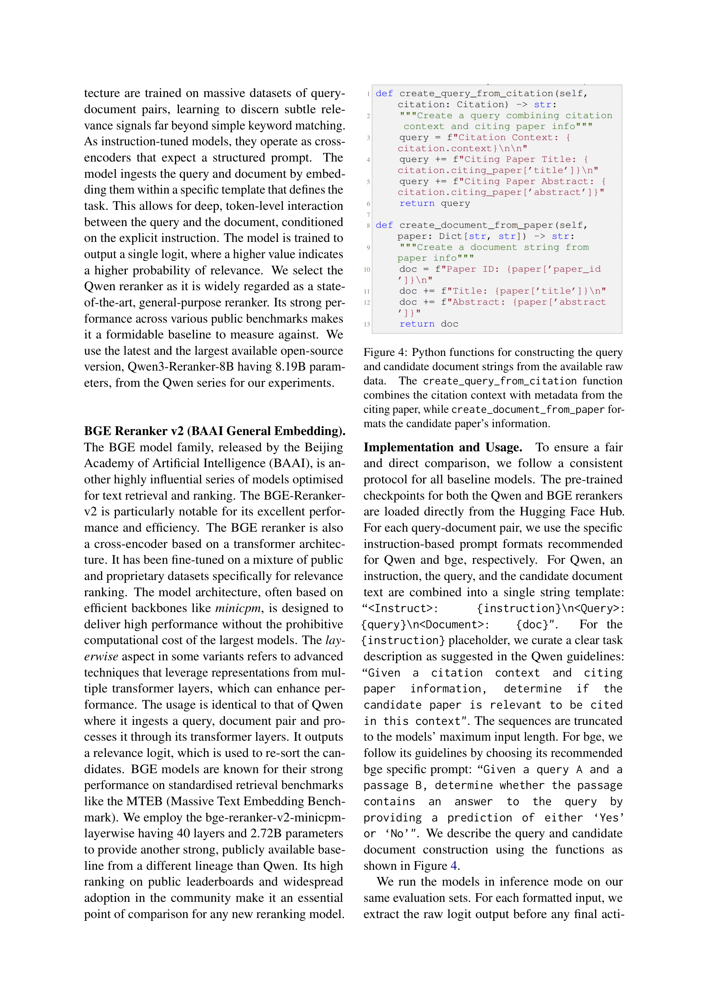

Figure 1
저자: Karan Goyal, Dikshant Kukreja, Vikram Goyal, Mukesh Mohania | 날짜: 2026-03-18 | Journal: arXiv preprint | DOI: 10.48550/arXiv.2603.17361
Figure 1
논문의 "공적 프로필(public profile)" -- 인용 네트워크에서 다른 논문들이 해당 논문을 어떻게 인용하는지의 집합적 인식 -- 이 인용 추천의 핵심 신호임을 실증한다. 비학습(non-learnable) Profiler 모듈은 기존 SOTA 대비 검색 시간을 최대 44배 단축하면서 MRR을 45-64% 향상시키고, 110M 파라미터의 DAVINCI 리랭커는 8B 규모의 범용 리랭커를 모든 데이터셋에서 능가한다.

Figure 2

Figure 3

Figure 4
v_hat_i = v_i + (1/|N_in|) * sum(alpha * v_sji + beta * v_j)p_i = lambda^r_i)로 비선형 변환
Figure 5
"공적 프로필(public profile)"이라는 개념을 인용 추천에 도입한 것이 핵심 기여이다. 논문의 관련성이 내재적 내용뿐 아니라 학술 네트워크에서의 "인식된 정체성"에도 의존한다는 통찰을 비학습 모듈로 구현하여, 확인 편향 없이도 기존 3단계 시스템을 능가한다. 또한 transductive에서 inductive로의 평가 패러다임 전환을 제안하여 LCR 벤치마킹의 방법론적 표준을 높였다. 소형 특화 모델이 대형 범용 모델을 능가할 수 있다는 실증도 의미 있다.
총평: 인용 추천 시스템에서 "공적 프로필"이라는 직관적이면서도 효과적인 개념을 제안하고, 비학습 모듈과 경량 리랭커의 조합으로 대규모 범용 모델을 능가하는 실용적 시스템을 구축했다. 방법론적 완성도가 높으나, Science of Science 관점에서의 이론적 기여보다는 정보검색 공학 기여에 가까운 논문이다.